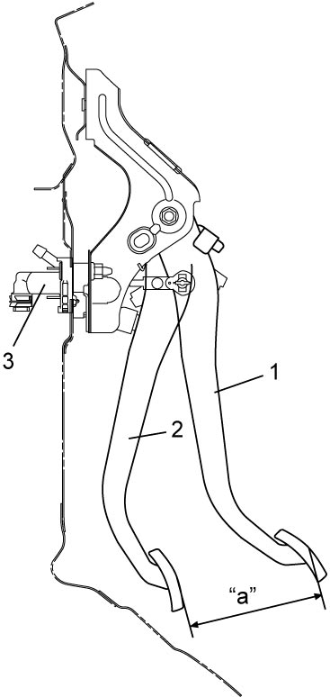
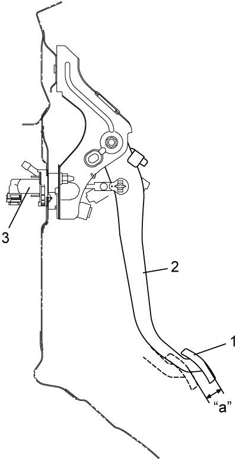
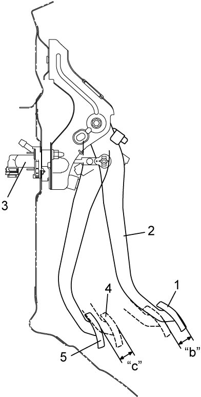

5C
| Clutch Pedal Inspection |
Clutch Pedal Height
Measure distance between free position (1) and fully depressed position (2) on clutch pedal shown by “a” in figure. If clutch pedal height is out of specification, replace pedal arm and/or clutch master cylinder (3).
Clutch pedal height
“a”: 125 mm (4.92 in.)

 "Expand image")
Cylinder Push Rod Play
Press clutch pedal (1) gradually with finger, stop it when slight increase of resistance is felt and measure how much pedal has moved (shown by “a” in figure).
If “a” is not within specification, replace master cylinder (3) or pedal arm (2).
Cylinder push rod play
“a”: Max.: 8 mm (0.31 in.)

 "Expand image")
Clutch Pedal Free Travel
Depress clutch pedal (1), stop it when clutch resistance is felt, and measure how much pedal has moved (shown by “b” in figure).
If “b” is not within specification, check pedal arm (2) and master cylinder (3) and replace defective part.
Clutch pedal free travel
“b”
:
2 – 8 mm (0.08 – 0.31 in.)
Clutch Release Margin
1)Apply parking brake fully and block wheels.
2)Start engine and keep engine at idle in neutral position.
3)Without clutch pedal (1) depressed, slightly push the shift lever to reverse position until transaxle emits gear contact noise. Do not shift the lever to reverse position.
4)While listening to gear contact noise, slowly depress clutch pedal (1) and stop it when gear contact noise died (release point).
5)Measure distance between release point (4) and full stroke point (5) on clutch pedal (1) shown by “c” in the figure.
If “c” is not within specification, air may be trapped in clutch system. Bleed clutch system.
Upon completion of above inspection, start engine and check clutch for proper operation.
If “c” is not within specification, air may be trapped in clutch system. Bleed clutch system.
Upon completion of above inspection, start engine and check clutch for proper operation.
Clutch release margin
“c”: 25 – 40 mm (0.98 – 1.57 in.)

 "Expand image")